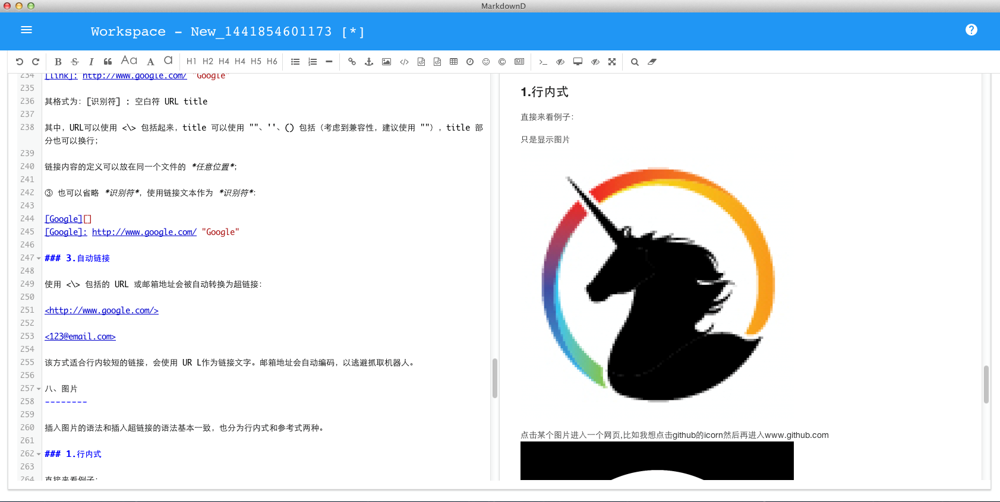

試用 MarkdownD
免費 | MacOS X 10.7.5 或更高版本 購買 MarkdownD
$19.99 | MacOS X 10.7.5 或更高版本 從蘋果應用商店中獲取
$24.99 | MacOS X 10.7.5 或更高版本
免費 | MacOS X 10.7.5 或更高版本 購買 MarkdownD
$19.99 | MacOS X 10.7.5 或更高版本 從蘋果應用商店中獲取
$24.99 | MacOS X 10.7.5 或更高版本
產品功能特性
- 支持標準的Markdown/CommonMark and GFM（GitHub Flavored Markdown）
- 支持即時預覽
- 支持格式化文字、代碼塊，表格，代碼折疊，查找替換，多語言，HTML實體，代碼語法高亮
- 支持Toc (Table of Contents), Emoji表情， TaskLists（工作清單）, @Links(連結)
- 支持解碼及過濾HTML標籤及屬性
- 支持Tex(LaTex 運算式，基於KaTeX)，流程圖和序列圖
- 支持文檔自動復原
- 支持多文檔同時編輯，不限數量